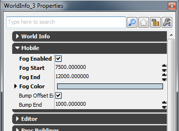

UDN
Search public documentation:
DesigningForMobileKR
English Translation
�?��翻译
Interested in the Unreal Engine?
Visit the Unreal Technology site.
Looking for jobs and company info?
Check out the Epic games site.
Questions about support via UDN?
Contact the UDN Staff
�?��翻译
Interested in the Unreal Engine?
Visit the Unreal Technology site.
Looking for jobs and company info?
Check out the Epic games site.
Questions about support via UDN?
Contact the UDN Staff
UE3 ??/a> > 모바????/a> > 모바?�용 콘텐�??�자?�하�?
UE3 ??/a> > ?�티?�과 ?�펙??/a> > ?�그 ?�펙??/a> > 모바?�용 콘텐�??�자?�하�?
UE3 ??/a> > 캐릭???�티?�트 / 배경 ?�티?�트 > 모바?�용 콘텐�??�자?�하�?
UE3 ??/a> > ?�티?�과 ?�펙??/a> > ?�그 ?�펙??/a> > 모바?�용 콘텐�??�자?�하�?
UE3 ??/a> > 캐릭???�티?�트 / 배경 ?�티?�트 > 모바?�용 콘텐�??�자?�하�?
문서 변경내?? Josh Adams ?�성. ?�성�?/a> 번역.
개요
?�기?�는 ???��? 모바???�드?�어?�서 ???�행?�도�?콘텐츠�? ?�자?�하??비법???�???�뤄 보겠?�니??
?�포먼스 고려?�항
- ?�켈?�탈 메시
- 캐릭??메시??가급적 로우 ?�리�??��??�야 ?�니?? ?�피?�티 블레?�드??캐릭?�는 ?�??8�??�리, 3�?버텍???��??�니??
- ?�레?�율????��???�는 ?�켈?�탈 메시??버텍???��? 가??먼�? 최적?�시?�는 것이 좋습?�다.
- �?bone) ?�한 ?�폴?�는 75 ?�니?? �??�한???�면, ???�치�???�� ???�습?�다. (Engine.ini ?�일 ??
[SystemSettings] 부분의 MobileBoneCount ?�팅?�니??) ?��? ?�해 메모�??�용?�과 CPU 부?��? 줄일 ???�습?�다.
- 최�? 버텍???�향?????�폴?�는 2 ?�니?? ?��? ?�치�??�리?�면 Engine.ini ?�일??
[SystemSettings] ??MobileBoneWeightCount ?�팅?�로 ?�릴 ???�습?�다. ???�치�??�리�??�더�??�도???�향???�칩?�다. 1�???���?(?�마??로봇 게임?) ?�도가 ?�르??것을 �????�을 것입?�다.
- ?�로 �?
- ?�로 �??�는 매우 중요?�니?? �?머티리얼?� 별개???�로 콜로 그려지기에, 머티리얼???�인 메시가 ?�나 ?�을 경우, ?�로 콜�? 4 ?�니??
- �?메시 ??��??별개???�로 콜로 그려지기에, ?�체?�인 메시 ?�기가 ?�무 커�?지 ?�는 ?�에??메시�?결합?�는 것이 좋습?�다. ?�그?�면 ?�시?��? 미리계산 기능?�로 컬링(?�략)?�키기�? ?�들 것입?�다.
- 모바???�바?�스?�서???�시?��? 미리계산 기능???�더링되??메시???��? 줄여주기?? 치명?�으�?중요?�니?? �?모든 ?�벨??Precomputed Visibility Volume ???�요??만큼 추�??�도�??�십?�오.
?�벨�??�더�??�팅
?�개 �?범프 ?�프??/a>?� WorldInfo ?��? ?�로?�티�??�어?�니?? View | World Properties ?�서 Mobile 부분으�?갑니??
- 캐릭??메시??가급적 로우 ?�리�??��??�야 ?�니?? ?�피?�티 블레?�드??캐릭?�는 ?�??8�??�리, 3�?버텍???��??�니??
- ?�레?�율????��???�는 ?�켈?�탈 메시??버텍???��? 가??먼�? 최적?�시?�는 것이 좋습?�다.
- �?bone) ?�한 ?�폴?�는 75 ?�니?? �??�한???�면, ???�치�???�� ???�습?�다. (Engine.ini ?�일 ??
[SystemSettings]부분의MobileBoneCount?�팅?�니??) ?��? ?�해 메모�??�용?�과 CPU 부?��? 줄일 ???�습?�다. - 최�? 버텍???�향?????�폴?�는 2 ?�니?? ?��? ?�치�??�리?�면 Engine.ini ?�일??
[SystemSettings]??MobileBoneWeightCount?�팅?�로 ?�릴 ???�습?�다. ???�치�??�리�??�더�??�도???�향???�칩?�다. 1�???���?(?�마??로봇 게임?) ?�도가 ?�르??것을 �????�을 것입?�다.
- ?�로 �??�는 매우 중요?�니?? �?머티리얼?� 별개???�로 콜로 그려지기에, 머티리얼???�인 메시가 ?�나 ?�을 경우, ?�로 콜�? 4 ?�니??
- �?메시 ??��??별개???�로 콜로 그려지기에, ?�체?�인 메시 ?�기가 ?�무 커�?지 ?�는 ?�에??메시�?결합?�는 것이 좋습?�다. ?�그?�면 ?�시?��? 미리계산 기능?�로 컬링(?�략)?�키기�? ?�들 것입?�다.
- 모바???�바?�스?�서???�시?��? 미리계산 기능???�더링되??메시???��? 줄여주기?? 치명?�으�?중요?�니?? �?모든 ?�벨??Precomputed Visibility Volume ???�요??만큼 추�??�도�??�십?�오.

?�개�?켜면 �??�야???�???�각 ?�과가 ?�상?�겠지�? 그에 관?�된 ?�더�??�간???�습?�다. �??�려지??부분�? Fog Start?�서 End 범위 ?�에 발생?�니, �???값의 범위�?�?맞게 ?�면 ?��?????것입?�다. �?범위???��??�도 ?�함??메시???�체 메시??걸쳐 ?�개 계산???�행?��?�? (?�드 공간?? ??메시??주의?�시�?바랍?�다. ?�연??Fog Start 보다 가까운 메시?�는 ?�개가 ?�용?��? ?�으�? Fog End ?�후??것�? 최�? ?�개가 ?�용?�니?? ?�기?�는 Fog End ?�머�??�용?�는 ?�개 ?�을 ?�어?�는 Fog Color??Alpha가 중요?�니?? (?�파�?255 ??메시�?Fog Color ?�색?�로 만듭?�다.) ?�개?� ?�사??것�? 범프 ?�프???�팅?�니?? ?�프?�을 ?�용?�키�??�해 모바???�로?�티?�서 범프 ?�프?�을 �??�프?�을 ?�용?�킨 머티리얼?� 무엇?�든, Bump Offset Enabled ?�팅??체크(?�폴????줘야 ?�니?? 그러??Bump End 보다 멀�??�는 메시?�는 ?�용?��? ?�을 것입?�다.